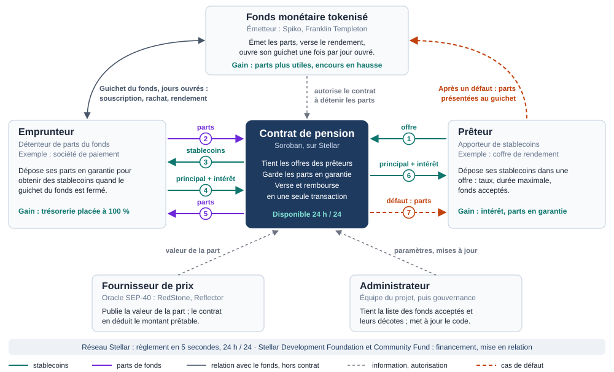
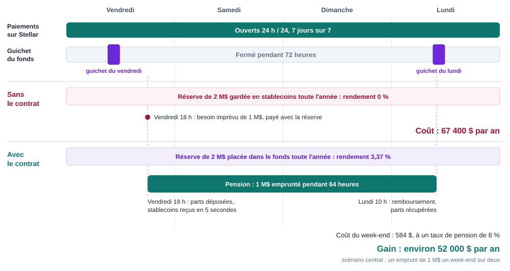

| Destinataires | Jury de HackMeridian 2026, Stellar Development Foundation et Stellar Community Fund, émetteurs de fonds tokenisés, apporteurs de liquidité |
|---|---|
| Échéances | HackMeridian, Lisbonne, 25 et 26 octobre 2026 · Stellar Community Fund n° 46, dépôt avant le 8 novembre 2026 |
| Objet | Présenter le besoin, la solution, sa faisabilité et son retour sur investissement, puis servir de base au plan d'implémentation |
| Niveaux de preuve | A vérifié sur la page de l'éditeur · B source secondaire ou résumé · C hypothèse de travail. Chaque chiffre porte son niveau en section 11. |
Les fonds monétaires tokenisés de Stellar rapportent, mais leur guichet de rachat n'ouvre qu'une fois par jour ouvré. Le contrat proposé prête des stablecoins contre ces parts, à toute heure, pour une durée et un prix fixés d'avance.
Sur Stellar, les paiements partent jour et nuit. Les fonds monétaires tokenisés, eux, ne rachètent leurs parts qu'une fois par jour ouvré. Un détenteur qui a besoin d'argent le vendredi soir attend lundi. Pour ne pas attendre, il garde à côté une réserve de stablecoins qui ne rapporte rien.
Un contrat Soroban de mise en pension. Le détenteur y dépose ses parts en garantie et reçoit des stablecoins dans la même transaction. Il rembourse à l'échéance, à un prix fixé d'avance, et récupère ses parts. Les stablecoins viennent de prêteurs qui ont déposé leurs offres à l'avance.
Une réserve de 2 M$ coûte 67 400 $ par an en rendement perdu. Avec le contrat, elle est placée dans le fonds et le détenteur n'emprunte qu'en cas de besoin. Le gain est d'environ 52 000 $ par an dans le scénario central. Il reste positif dans les neuf scénarios testés, pour des taux de pension de 5 % à 11 %.
| À qui | Quoi |
|---|---|
| Jury de HackMeridian | Évaluer le prototype déployé sur le réseau de test |
| Stellar Community Fund | Un Build Award pour mener le contrat jusqu'au réseau principal. Le programme plafonne à 150 000 $ en XLM ; le montant demandé reste à chiffrer |
| Un émetteur de fonds | Autoriser le contrat à détenir ses parts, sur le réseau de test puis dans un pilote plafonné |
| Deux ou trois prêteurs | Déposer des offres de stablecoins pendant le pilote |
| Indicateur | Valeur | Date | Niveau |
|---|---|---|---|
| Actifs réels tokenisés sur Stellar | 1 Md$, puis 3 Md$, puis plus de 4 Md$ | janv., juin, août 2026 | B |
| Détenteurs d'actifs réels sur Stellar | Plus de 19 000, pour 70 actifs | août 2026 | B |
| Stablecoins en circulation sur Stellar | Plus de 1 Md$ | 5 sept. 2026 | B |
| Spiko, tous réseaux | 1,03 Md$ d'encours, plus de 3 300 clients actifs ; les entreprises détiennent plus de 92 % de l'encours | 19 fév. 2026 | A |
| Spiko sur Stellar, selon RedStone | Fonds de bons du Trésor : de 130 M$ en janvier à un pic de 536 M$. Fonds au jour le jour : 951 M$ | août 2026 | B |
| Fonds monétaires tokenisés dans le monde | Environ 7 Md€, encours doublé en un an | avril 2026 | A |
| Fonds | Règle de rachat | Niveau |
|---|---|---|
| Spiko (EUTBL, USTBL) | Liquidité quotidienne, les jours ouvrés. Depuis juin 2026, Spiko accepte les stablecoins, en précisant : « From the funds' perspective, nothing fundamentally changes: stablecoins are simply a new payment method. » | A |
| Spiko, retrait | Délai annoncé de 1 à 2 jours ouvrés | B |
| BENJI (Franklin Templeton) | Rachat réglé à J+1, les jours ouvrés. Les parts se transfèrent entre détenteurs à toute heure | B |
Entre deux guichets, il s'écoule 24 heures en semaine et 72 heures le week-end, davantage avec un jour férié. La Banque centrale européenne décrit ce décalage comme un risque :
« Tokenised shares may be redeemable instantly and 24/7 […], while at present the underlying MMF can only process subscriptions and redemptions at fixed cut-off times and with delays. This discrepancy between the liquidity of the token and underlying MMF creates a potential mismatch, increasing the risk of runs. »
BCE, Macroprudential Bulletin n° 33, avril 2026. Niveau A.
| Acteur | Ce qui existe | Date | Niveau |
|---|---|---|---|
| USYC (Circle) | Rachat en USDC « en quasi temps réel », dans la limite d'une capacité de rachat instantané financée par le sponsor | en vigueur | A |
| BUIDL (BlackRock) | Rachat le jour même en USDC, par une facilité de Circle | en vigueur | B |
| Réseau Canton | Pension de bons du Trésor américain contre USDC, réglée un samedi. Participants : Bank of America, Citadel Securities, DTCC, Société Générale, Tradeweb, Circle, Virtu, Cumberland DRW, Hidden Road | 12 août 2025 | A |
| DBS, Franklin Templeton, Ripple | Parts sgBENJI sur XRP Ledger, utilisables comme collatéral : « obtaining credit […] from the bank via a repurchase transaction (repo) » | 18 sept. 2025 | A |
| CFTC (États-Unis) | Lignes directrices sur le collatéral tokenisé, qui couvrent les bons du Trésor et les fonds monétaires | 8 déc. 2025 | A |
| DTCC | Connexion de son service de tokenisation à Stellar, visée au premier semestre 2027 | annonce de mai 2026 | B |

| N° | De qui à qui | Ce qui circule | Quand |
|---|---|---|---|
| 1 | Prêteur vers contrat | Stablecoins déposés dans une offre : taux, durée maximale, fonds acceptés | À l'avance |
| 2 | Emprunteur vers contrat | Parts du fonds, bloquées en garantie | À l'ouverture, dans la même transaction |
| 3 | Contrat vers emprunteur | Stablecoins, à hauteur de la valeur des parts moins une décote | |
| 4 | Emprunteur vers contrat | Principal et intérêt | À l'échéance ou avant, dans la même transaction |
| 5 | Contrat vers emprunteur | Parts rendues | |
| 6 | Contrat vers prêteur | Principal et intérêt | |
| 7 | Contrat vers prêteur | Parts saisies, que le prêteur présente ensuite au guichet du fonds | Seulement en cas de défaut |
| Partie prenante | Rôle | Ce qu'elle gagne | Ce qu'on lui demande |
|---|---|---|---|
| Emprunteur détenteur de parts | Met ses parts en pension quand le guichet est fermé | Sa trésorerie est placée en entier ; il paie seulement quand il emprunte | Faire confiance au guichet de nuit pour l'imprévu |
| Prêteur | Dépose des stablecoins dans des offres | Un intérêt à taux fixe, sur une durée courte, garanti par des bons du Trésor | Laisser des stablecoins disponibles hors des heures ouvrées |
| Émetteur du fonds | Émet les parts, tient le guichet de rachat | Des parts plus utiles, donc plus d'encours et plus de frais de gestion | Autoriser le contrat à détenir ses parts |
| Fournisseur de prix | Publie la valeur de la part au standard SEP-40 | Un usage de plus pour ses flux | Publier le prix des fonds acceptés |
| Administrateur | Tient la liste des fonds acceptés et leurs décotes, met à jour le code | Une commission sur les intérêts, si ce modèle est retenu | Rendre des comptes sur les paramètres |
| Réseau Stellar et SDF | Règlent les transactions ; financent et mettent en relation | Plus d'actifs réels, plus de circulation des stablecoins, des paiements sans interruption | Financer la brique et ouvrir les portes des émetteurs |

L'analogie : le distributeur de billets. Avant le distributeur, la banque fermait le soir et le week-end. Chacun retirait du liquide le vendredi « au cas où », et cet argent dormait dans un tiroir. Le distributeur n'a pas remplacé la banque : il a rendu l'épargne accessible à toute heure, et plus personne ne garde un tiroir plein. Le contrat de pension est le distributeur des fonds tokenisés.
Le contrat est aux fonds tokenisés ce que le distributeur de billets est à la banque. Le tableau fait correspondre les deux situations terme à terme.
| Dans la vie courante | Sur Stellar |
|---|---|
| L'agence bancaire, ouverte aux heures de bureau | Le guichet de rachat du fonds, ouvert une fois par jour ouvré |
| Le liquide retiré d'avance et gardé dans un tiroir | La réserve de stablecoins, qui ne rapporte rien |
| Le distributeur de billets, ouvert jour et nuit | Le contrat de pension |
| La société qui remplit le distributeur | Les prêteurs, qui déposent leurs offres à l'avance |
| La commission de retrait | L'intérêt de la pension : 365 à 804 $ par million pour un week-end |
Une différence. Au distributeur, on retire son propre argent. Ici, on laisse ses parts en gage et on les récupère à la réouverture, comme chez un prêteur sur gage. Le détenteur ne vend rien et continue de toucher le rendement de ses parts.
Stellar est une ville dont les commerces sont ouverts jour et nuit, mais dont les banques ferment le vendredi matin. Tant qu'il n'y a pas de distributeur, chaque habitant garde un tiroir plein, et l'épargne de la ville travaille moins qu'elle ne pourrait. Les villes voisines installent déjà les leurs.
| Argument | Fait |
|---|---|
| Le besoin grandit avec le marché | Plus de 4 Md$ d'actifs réels et plus de 19 000 détenteurs sur Stellar, pour un guichet par jour ouvré |
| Les briques viennent d'arriver | 47 flux de prix RedStone sur Stellar depuis l'été 2026, dont celui de BENJI |
| La concurrence avance | Pension réalisée sur Canton, annoncée sur XRP Ledger avec les parts de Franklin Templeton ; BUIDL et USYC ont leur sortie instantanée |
| L'effet est mesurable | Chaque million sorti d'une réserve dormante rapporte 33 700 $ de rendement par an à son détenteur, avant le coût des pensions, et 2 500 $ de frais au fonds |
| La mise est modeste | Un seul contrat, des standards existants, un financement plafonné à 150 000 $ versé par étapes |
| Indicateur | Valeur | Date | Niveau |
|---|---|---|---|
| Rendement net du fonds Spiko en dollars (USTBL) | 3,37 % | 5 oct. 2026 | B |
| Rendement net du fonds Spiko en euros (EUTBL) | 2,09 % | 5 oct. 2026 | B |
| Frais de gestion annoncés par Spiko | 0,25 % par an | page du fonds | A |
| Taux des pensions au jour le jour aux États-Unis (SOFR) | 3,87 % | 1er oct. 2026 | A |
| Taux servi aux prêteurs d'USDC sur Blend, premier protocole de prêt de Stellar | 6,68 % | 5 oct. 2026 | A |
| Même taux, moyenne sur 30 jours ; extrêmes sur 90 jours | 7,18 % ; 5,81 % à 19,83 % | 5 oct. 2026 | A |
| Taux payé par les emprunteurs d'USDC sur Blend | environ 10,9 % | oct. 2026 | B |
| Flux de prix RedStone sur Stellar, dont conformes SEP-40 | 47, dont 18 | 26 août 2026 | A |
| Durée sans guichet : semaine, week-end | 24 h, 72 h | calcul | A |
Ces taux encadrent le prix d'une pension. Elle vaudra plus que le rendement du fonds (3,37 %), sans quoi le prêteur achèterait le fonds. Elle vaudra moins que le taux payé sur Blend (environ 10,9 %), car la garantie est faite de bons du Trésor. D'où les trois scénarios retenus : 5 %, 8 % et 11 %.
| Indicateur | Seuil visé pendant le pilote | D'où vient le seuil |
|---|---|---|
| Délai entre la demande et la réception des stablecoins | Une transaction, soit environ 5 secondes | Délai de règlement du réseau |
| Taux moyen des pensions | Inférieur à 8,9 % | Seuil de rentabilité de l'emprunteur dans l'usage le plus lourd (section 7) |
| Taux d'utilisation des offres | Supérieur à 42 % pour un taux de 8 % | Seuil à partir duquel le prêteur gagne plus qu'en détenant le fonds |
| Réserves converties en parts | Montant déclaré par chaque emprunteur pilote | Mesure directe du gain d'encours pour le fonds |
| Offres disponibles hors guichet | Couvrir le besoin déclaré des emprunteurs pilotes | Condition de la confiance des trésoriers |
| Pensions rachetées à l'échéance | Suivi de chaque défaut et de sa résolution au guichet | Mesure du risque réel du prêteur |
| Coût par opération | Constant quand le nombre de pensions augmente | Test de charge à réaliser |
Taille de pilote proposée : un émetteur, deux ou trois prêteurs, trois à cinq emprunteurs. Les seuils chiffrés découlent des calculs de la section 7 ; les autres sont des propositions à discuter avec l'émetteur pilote.
| Brique | État | Niveau |
|---|---|---|
| Parts des fonds | Spiko : contrats Soroban audités par Halborn en 2025, dont un contrat de rachat on-chain ; ses règles de transfert sont à confirmer avec lui. BENJI : actif Stellar classique | A |
| Détention par un contrat | Pour un actif Stellar à autorisation requise, la documentation prévoit que l'émetteur autorise explicitement l'adresse du contrat | A |
| Stablecoins | USDC et EURC sont émis nativement sur Stellar et suivent l'interface de token standard SEP-41 | A |
| Prix des parts | RedStone publie le prix de BENJI. Aucun flux Spiko n'a été repéré : il faudra le demander | A |
| Échange en une transaction | Les parts sont bloquées et les stablecoins versés ensemble, ou rien ne se passe. Le réseau bloque les appels réentrants entre contrats | A |
| Mise à jour du code | Prévue par Soroban : l'administrateur remplace le code sans changer l'adresse du contrat | A |
| Outillage | Le dépôt contient déjà un espace de travail Soroban et une intégration continue (tests et compilation) | A |
Deux audits de protocoles de prêt sur Stellar, Slender et Peridot, relèvent le même défaut : une liquidation qui parcourt toutes les positions dépasse les limites de ressources du réseau et se bloque. La conception l'évite :
Ce sont des intentions de conception. Un test de charge devra les confirmer par des mesures.
Ajouter un fonds est un paramétrage : adresse du token, source de prix, décote. Le contrat ne dépend que de deux standards, SEP-41 pour les tokens et SEP-40 pour les prix. Les versions suivantes s'ajoutent sans réécrire la première.
| Version | Contenu |
|---|---|
| 1, hackathon | Pension à durée et taux fixes, offres permanentes, deux fonds de test (euro et dollar), interface web minimale |
| 2 | Offres adossées à un coffre de rendement : les stablecoins restent rémunérés tant qu'ils ne sont pas prêtés. Carnet d'offres avec meilleure exécution |
| 3 | Renouvellement automatique, appels de marge pour des durées plus longues, parts de prêteur tokenisées |
| 4 | Garantie à première demande, sur le même moteur de collatéral |
| Étape | Date | Livrable |
|---|---|---|
| HackMeridian | 25 et 26 octobre 2026 | Contrat sur le réseau de test, deux fonds de test, interface, démonstration en trois minutes |
| Dépôt au fonds communautaire | Avant le 8 novembre 2026 | Dossier de Build Award. Le programme exige une architecture technique complète au dépôt, et un formulaire d'intérêt préalable |
| Tranche 1 | Après attribution | Version complète du contrat, tests, prix réel d'un fonds |
| Tranche 2 | À la suite | Pilote sur le réseau de test avec un émetteur, préparation de l'audit |
| Tranche 3 | À la suite | Audit, puis pilote plafonné sur le réseau principal |
Le fonds communautaire verse 10 % à l'attribution, puis 20 %, 30 % et 40 % à chaque tranche validée. Il indique une durée habituelle de 3 à 6 mois par projet. Niveau A.
Le contrat fonctionne comme une assurance de liquidité : on ne paie que lorsqu'on s'en sert. Il vise la part imprévisible des besoins.
Cas type : une société garde 2 M$ de stablecoins de côté pour ses imprévus. Le fonds en dollars rapporte 3,37 % net.
| Situation de départ | Pratique | Coût annuel |
|---|---|---|
| Trésorier passif | Garde 2 M$ en stablecoins toute l'année | 67 400 $ |
| Trésorier actif | Rachète 2 M$ chaque vendredi et resouscrit chaque lundi ; reste sans couverture les nuits de semaine | 28 800 $ |
Avec le contrat, la réserve est placée et la société emprunte seulement en cas de besoin. Un emprunt de 1 M$ pendant un week-end de 64 heures coûte 365 $ à 5 %, 584 $ à 8 % et 804 $ à 11 %.
| La société emprunte 1 M$… | Gain net à 5 % | Gain net à 8 % | Gain net à 11 % |
|---|---|---|---|
| chaque week-end | + 48 400 $ | + 37 000 $ | + 25 600 $ |
| un week-end sur deux | + 57 900 $ | + 52 200 $ | + 46 500 $ |
| un week-end sur quatre | + 62 700 $ | + 59 800 $ | + 57 000 $ |
Gain mesuré par rapport au trésorier passif. Formule : réserve × rendement du fonds − montant emprunté × durée × taux de pension. En gras, le scénario central.
Deux limites. Un besoin connu d'avance se couvre mieux par un rachat programmé au guichet du vendredi : le contrat ne vaut que pour l'imprévu. Et si la société empruntait toute sa réserve chaque week-end, le gain s'annulerait au-delà d'un taux de 8,9 %.
Les stablecoins d'une offre attendent d'être empruntés. Le prêteur ne gagne donc que sur la part réellement prêtée.
| Taux de pension | Utilisation nécessaire pour gagner plus que le fonds (3,37 %) | Utilisation nécessaire pour égaler Blend (6,68 %) |
|---|---|---|
| 5 % | 67 % | hors d'atteinte |
| 8 % | 42 % | 84 % |
| 11 % | 31 % | 61 % |
Exemple : 1 M$ mis en offre chaque week-end, prêté 60 % du temps à 8 %, rapporte 18 200 $ par an. Le même million aurait rapporté 12 800 $ dans le fonds et 25 400 $ sur Blend pendant ces week-ends.
C'est le point économique le plus fragile. Face à Blend, la pension offre un taux fixe, une durée courte et une garantie en bons du Trésor, mais elle rapporte moins tant que les offres dorment. Deux réponses : un taux de marché plus proche de 10 % au démarrage, que l'emprunteur supporte encore largement, puis des offres adossées à un coffre de rendement en version 2.
| Échelle | Hypothèse | Effet annuel | Niveau |
|---|---|---|---|
| Un client type | 2 M$ de réserve convertis en parts | 5 000 $ de frais de gestion pour le fonds, à 0,25 % | C |
| Le réseau | 10 % du milliard de stablecoins en circulation sont des réserves de précaution, soit 100 M$ | 3,4 M$ de rendement pour les détenteurs, 250 000 $ de frais pour les fonds, environ 760 000 $ d'intérêts pour les prêteurs | C |
| Acteur | Par client type et par an |
|---|---|
| Détenteur de parts | + 52 200 $ |
| Prêteurs | 15 200 $ d'intérêts |
| Fonds | 5 000 $ de frais |
Le contrat ne change rien au fonds. Il change une habitude : garder une réserve dormante. Trois acteurs doivent modifier leur pratique, chacun pour une raison différente.
| Acteur | Changement demandé | Frein principal | Levier |
|---|---|---|---|
| Trésorier | Placer sa réserve et compter sur le contrat pour l'imprévu | La peur de ne pas trouver de liquidité le jour où il en a besoin | Commencer par une fraction de la réserve. Offres visibles on-chain à tout moment. Coût connu avant de signer |
| Émetteur du fonds | Autoriser un contrat à détenir ses parts | La conformité : qui détient les parts, à quel titre, et que se passe-t-il en cas d'incident | Parties limitées à ses propres clients. Pilote plafonné. Audit. Argument d'encours chiffré |
| Prêteur | Laisser des stablecoins dans des offres | Le capital qui attend, et un rendement inférieur à Blend au démarrage | Garantie en bons du Trésor, durée de sept jours au plus, puis offres adossées à un coffre de rendement |
| SDF et fonds communautaire | Financer une brique nouvelle | Une demande annoncée, mais pas encore contractée | Prototype qui fonctionne. Lettres d'intention d'un émetteur et d'un prêteur |
La méthode suit les cinq étapes du modèle ADKAR, tiré du toolkit de conduite du changement.
| Étape | Question de l'acteur | Notre réponse |
|---|---|---|
| Prise de conscience | « Combien me coûte ma réserve ? » | Le calcul de la section 7, appliqué à ses propres chiffres |
| Envie | « Qu'est-ce que j'y gagne ? » | Un gain annuel chiffré pour le détenteur, le prêteur et le fonds |
| Connaissance | « Comment ça marche ? » | Les deux schémas, l'analogie du distributeur, la démonstration |
| Capacité | « Puis-je essayer sans risque ? » | Réseau de test, puis pilote plafonné sur une fraction de la réserve |
| Ancrage | « Est-ce que ça tient dans la durée ? » | Indicateurs publiés (section 5), audit, élargissement progressif des plafonds |
| Objection | Réponse |
|---|---|
| « Si tout le monde a besoin de liquidité le même week-end, il n'y en aura pas. » | C'est vrai en cas de crise de confiance dans un fonds, et le contrat ne prétend pas y répondre. Pour les besoins ordinaires, les offres sont déposées à l'avance et leur montant est visible avant de compter dessus |
| « Je peux racheter mes parts le vendredi. » | Oui, pour un besoin connu. Pas pour un imprévu du vendredi soir, ni pour une nuit de semaine |
| « Octarine fait déjà la sortie instantanée. » | Octarine rachète la part avec une décote. Ici, le détenteur garde sa position et connaît son coût d'avance. Les deux se complètent : Octarine peut servir de sortie à un prêteur après un défaut |
| « Un contrat qui détient des parts régulées est un risque. » | Le contrat ne traite qu'avec des adresses autorisées par l'émetteur, sous plafond, et son code est audité avant le réseau principal |
Le contrat a trois clients qui dépendent les uns des autres. L'ordre d'approche compte plus que le volume de prospection.
| N° | Cible | Pourquoi à ce rang | Ce qu'on lui propose |
|---|---|---|---|
| 1 | Un émetteur pilote | Sans son autorisation, le contrat ne peut pas détenir de parts | Une sortie hors guichet pour ses clients, sans la financer lui-même ; un gain d'encours mesuré |
| 2 | Deux ou trois prêteurs | Sans offres, il n'y a pas de liquidité à montrer aux trésoriers | Un prêt court, à taux fixe, garanti par des bons du Trésor |
| 3 | Trois à cinq emprunteurs | Ce sont les clients de l'émetteur pilote : il nous y introduit | Placer leur réserve et payer seulement en cas d'usage |
Spiko annonce plus de 3 300 clients actifs, et les entreprises détiennent plus de 92 % de son encours : les emprunteurs potentiels sont déjà identifiés chez l'émetteur. A
| Cible | Message | Preuve à apporter |
|---|---|---|
| Émetteur de fonds | « Vos concurrents financent leur sortie instantanée. Ici, c'est le marché qui la finance. » | Comparaison avec BUIDL et USYC ; frais additionnels par million converti |
| Prêteur | « Un taux fixe sur quelques jours, garanti par des bons du Trésor. » | Décote, durée maximale, parcours en cas de défaut |
| Trésorier | « Votre réserve vous coûte 33 700 $ par million et par an. » | Simulation sur ses chiffres ; offres visibles on-chain |
| SDF et fonds communautaire | « La composabilité que vous annoncez, en un contrat. » | Prototype, lettres d'intention, comparaison avec Canton et XRP Ledger |
| Option | Principe | Ordre de grandeur |
|---|---|---|
| Commission sur les intérêts | Le contrat retient une part de l'intérêt versé au prêteur | À 10 %, environ 1 500 $ par client type et par an ; environ 76 000 $ par an dans le scénario à 100 M$ de réserves converties |
| Frais fixes par pension | Un montant fixe à l'ouverture | Simple, mais pèse sur les petits montants |
| Bien commun financé | Aucune commission ; financement par le fonds communautaire | Favorise l'adoption, sans revenu propre |
Ces montants sont des hypothèses de travail. Niveau C.
À savoir. La piste ouverte du fonds communautaire s'adresse à des équipes qui ont déjà de la traction ou une expérience prouvée sur Stellar. Un résultat à HackMeridian et des lettres d'intention serviront de preuves.
| Risque | Probabilité | Gravité | Réponse |
|---|---|---|---|
| L'émetteur refuse d'autoriser le contrat | Moyenne | Haute | Parties limitées à ses clients, pilote plafonné, argument d'encours |
| Pas assez de prêteurs, ou un taux trop élevé | Moyenne | Haute | Le gain de l'emprunteur reste positif jusqu'à 11 % dans les usages testés ; offres adossées à un coffre en version 2 |
| Le rendement du fonds est versé en nouvelles parts, donc au contrat pendant la pension (cas de BENJI) | Haute | Moyenne | Version 1 calée sur le modèle de Spiko, où la valeur de la part monte ; cas de BENJI traité dans la spécification |
| Aucun flux de prix pour le fonds choisi | Moyenne | Moyenne | BENJI a un flux RedStone ; pour Spiko, le demander à RedStone ou à l'émetteur |
| Crise de confiance dans un fonds | Faible | Haute | Hors du champ du contrat ; le dire clairement |
| Qualification juridique de la pension sur parts régulées | Inconnue | Haute | À instruire avec l'émetteur pilote avant le réseau principal |
| Faille dans le contrat | Faible | Haute | Tests, audit avant le réseau principal, plafonds |
| Hypothèse | État | Comment la lever |
|---|---|---|
| Les détenteurs gardent une réserve de précaution significative | Non vérifiée. Indice : les clients de Spiko sont surtout des entreprises | Entretien avec trois trésoriers |
| Des prêteurs acceptent de laisser des stablecoins hors heures ouvrées | Non vérifiée | Entretien avec un gestionnaire de coffre |
| Un émetteur accepte d'autoriser le contrat | Non vérifiée | Entretien avec Spiko ou Franklin Templeton |
| Le taux de pension se situe entre 5 % et 11 % | Encadré par le SOFR et par Blend, non observé | Premières offres du pilote |
| Point fragile | Résultat de la vérification |
|---|---|
| « Spiko n'a pas de sortie instantanée » | Confirmé par Spiko : les stablecoins sont un moyen de paiement, le fonctionnement du fonds ne change pas |
| Date et participants de la pension sur Canton | Confirmés : 12 août 2025, neuf établissements nommés |
| Taux de pension sans repère | Encadré par deux taux observés : SOFR à 3,87 % et Blend à 6,68 %. Un scénario à 11 % a été ajouté |
| Rentabilité du prêteur | Recalculée face à Blend : c'est désormais le point le plus fragile, avec une réponse en version 2 |
| Prix des parts disponible on-chain | Confirmé pour BENJI, non trouvé pour Spiko |
| Profil des détenteurs | Spiko : plus de 3 300 clients, plus de 92 % de l'encours détenu par des entreprises |
| Règles de HackMeridian sur le code écrit avant l'événement | Les conditions générales n'en disent rien. La piste « Scale » accueille des produits existants. Les règles propres à l'événement restent à paraître |
| Position de la CFTC en septembre 2026 | Retirée : une seule source secondaire. Seul le communiqué du 8 décembre 2025 est conservé |
A vérifié le 5 octobre 2026 sur la page de l'éditeur ou dans la base consultée · B source secondaire ou résumé de recherche · C hypothèse de travail.
| N° | Fait | Source | Niveau |
|---|---|---|---|
| 1 | Actifs réels sur Stellar : 1 Md$ en janvier, 3 Md$ en juin, plus de 4 Md$ fin août 2026 | Lumen Loop, points hebdomadaires des 31 juil. et 4 sept. 2026 | B |
| 2 | Plus de 19 000 détenteurs et 70 actifs ; plus de 1 Md$ de stablecoins | Lumen Loop, 28 août et 11 sept. 2026 | B |
| 3 | La composabilité est la prochaine priorité de la SDF | Lumen Loop, 2 oct. 2026, d'après un entretien du 30 sept. | B |
| 4 | Le décalage entre token et fonds accroît le risque de retraits massifs ; marché d'environ 7 Md€ | BCE, Macroprudential Bulletin n° 33, avril 2026 | A |
| 5 | Spiko : les stablecoins ne changent pas le fonctionnement du fonds | Blog Spiko, 30 juin 2026 | A |
| 6 | Spiko : liquidité quotidienne les jours ouvrés ; frais de 0,25 % | Page du fonds Spiko en euros | A |
| 7 | Spiko : 1,03 Md$, plus de 3 300 clients, plus de 92 % de l'encours en entreprises | Blog Spiko, 19 fév. 2026 | A |
| 8 | Spiko : retrait en 1 à 2 jours ouvrés | Support Spiko, lu par un résumé | B |
| 9 | BENJI : rachat à J+1 les jours ouvrés ; transferts entre détenteurs à toute heure | Fiches BENJI ; prospectus déposé à la SEC, lu par un résumé | B |
| 10 | USYC : rachat en USDC en quasi temps réel, sous plafond | circle.com/usyc | A |
| 11 | BUIDL : rachat le jour même en USDC | Fiche BUIDL, résumé | B |
| 12 | Pension de bons du Trésor contre USDC, un samedi, sur Canton | Communiqué du 12 août 2025, repris par Yahoo Finance | A |
| 13 | DBS, Franklin Templeton, Ripple : sgBENJI comme collatéral de pension | Communiqué Ripple, 18 sept. 2025 | A |
| 14 | CFTC : lignes directrices sur le collatéral tokenisé | Communiqué CFTC n° 9146-25, 8 déc. 2025 | A |
| 15 | RedStone : 47 flux sur Stellar dont 18 SEP-40 ; BENJI inclus ; croissance de Spiko sur Stellar | Blog RedStone, 26 août 2026 | A |
| 16 | Rendements nets : USTBL 3,37 %, EUTBL 2,09 % | Résumé de recherche, 5 oct. 2026 | B |
| 17 | SOFR : 3,87 % le 1er oct., 3,88 % le 2 oct. 2026 | sofrrate.com, d'après la Réserve fédérale de New York | A |
| 18 | Blend, USDC : 6,68 % le 5 oct. ; 7,18 % en moyenne sur 30 jours | Interface de données de DefiLlama | A |
| 19 | Blend, USDC : environ 10,9 % payés par les emprunteurs | Résumé de recherche | B |
| 20 | Aucune pension trouvée sur Stellar | Scout : 904 projets actifs, 1 343 soumissions de hackathon, dossiers du fonds communautaire | A |
| 21 | Octarine : rachat instantané d'actifs réels par enchères | Dossier du fonds communautaire, tour n° 44 | A |
| 22 | Liquidations bloquées par les limites de ressources | Audits Slender (Certora) et Peridot (Halborn) | A |
| 23 | Build Award : 150 000 $ au plus, quatre versements, 3 à 6 mois | Manuel du fonds communautaire Stellar | A |
| 24 | Tour n° 45 : 40 projets, environ 4,04 M$ ; tour n° 46 ouvert jusqu'au 8 nov. 2026 | Lumen Loop, 25 sept. 2026 ; Scout | B |
| 25 | HackMeridian : deux pistes, jusqu'à 30 000 $ en XLM ; rien sur le code préexistant | hackmeridian.com et ses conditions générales | A |
| 26 | Réserve de 2 M$, fréquence d'emprunt, taux de pension, part des stablecoins en réserve | Hypothèses de l'équipe | C |
Ce document sert de base au plan d'implémentation. Six actions le précèdent ou l'accompagnent.
| N° | Action | Échéance | Résultat attendu |
|---|---|---|---|
| 1 | Valider cette proposition : positionnement, scénarios de taux, modèle de revenus | Avant la spécification | Un cadre figé |
| 2 | Envoyer le formulaire d'intérêt au fonds communautaire | Dès maintenant | Une invitation à déposer avant le 8 novembre |
| 3 | Rédiger la spécification du contrat | Avant HackMeridian | États, fonctions, erreurs, tests, cas de BENJI, parcours de défaut |
| 4 | Écrire le plan d'implémentation | À la suite | Découpage en tâches pour le contrat, les tests, le déploiement et l'interface |
| 5 | Vérifier les règles propres à HackMeridian et choisir la piste | Avant le 25 octobre | « Genesis » ou « Scale », selon ce qui sera déjà construit |
| 6 | Mener trois entretiens à Meridian : un émetteur, un gestionnaire de coffre, un trésorier | Fin octobre | Les trois hypothèses ouvertes levées, et si possible des lettres d'intention |
Le PDF est produit à partir de trois fichiers placés dans le dossier proposition-commerciale : le texte (proposition.html) et les deux schémas (schema-1-parties-prenantes.svg, schema-2-probleme-reponse.svg). Chacun s'ouvre dans un éditeur de texte ; les schémas s'ouvrent aussi dans un logiciel de dessin vectoriel. Le script generer-pdf.ps1 reconstruit le PDF.